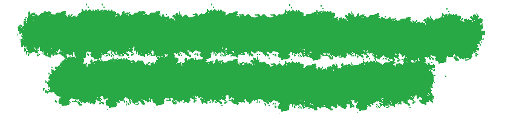
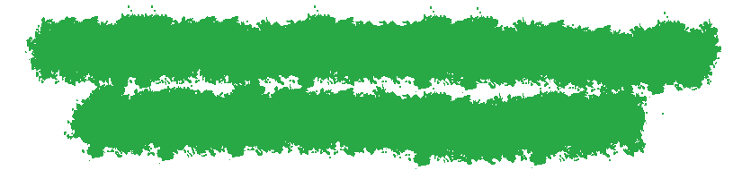

Meine Liebe: Argentinien
Hey, ich bin Maren und reise seit Anfang 2019 solo um die Welt. Meine Weltreise hat damals in Argentinien begonnen und es war eine Liebe auf den ersten Blick. Leider waren die geplanten vier Wochen in Argentinien nicht genug und so entschied ich mich nach 10 Monaten in Europa, Südamerika und Asien, Anfang 2020 nach Argentinien zurückzukehren, um dieses Paradies mit allen Facetten kennenzulernen und hier auf dieser Seite mit euch zu teilen.
Ich freue mich euch den Zauber der argentinischen Landschaften von Gletschern, endlosen Weiten, wundervollen Bergformationen zu Wüsten und Canyons und dazu diese einzigartige Kultur zu zeigen. Ihr findet hier alle Informationen, komplette Reiserouten und Randinformationen, um eure eigene Individualreise in dieses Land, wo der Wein fließt und es bestes Fleisch an jeder Ecke gibt, zu planen.
Falls du mehr über mich und meine Reise um die Welt erfahren möchtest, erfährst du es hier!
Erfahre mehr!Corona in Argentinien
(Stand 23.09.2021)
Kann ich trotz Corona nach Argentinien reisen?
Bald! Die argentinische Regierung hat bekannt gegeben, dass sie voraussichtlich zum 1. November die Grenzen für den Tourismus für vollständig geimpfte Personen wieder öffnen.
Folgende Voraussetzungen sind zu erfüllen:
- Du musst vollständig geimpft sein und es müssen mindestens zwei Wochen nach der letzten notwendigen Impfung vergangen sein
- In einem Zeitraum von 72 Stunden vorm Abflug muss ein PCR Test durchgeführt werden
- Ein weiterer PCR Test muss in Argentinien zwischen dem fünften und siebten Tag durchgeführt werden
Natürlich müssen alle PCR Tests selbst bezahlt werden. Diese Informationen können sich schnell wieder ändern, sodass du dich für rechtsverbindliche Informationen auf der Seite der argentinischen Regierung informieren musst.
Sind Reisen innerhalb von Argentinien möglich?
Ja, Reisen innerhalb vom Land sind wieder möglich. Du kannst wieder zwischen den Provinzen hin und her reisen. Solltest du noch in Argentinien sein, dann mach dich auf den Weg das Land zu erkunden!
Wie ist die Corona Situation in Buenos Aires?
In Buenos Aires gibt es derzeitig immer weniger Einschränkungen des normalen Lebens. Jedoch sind Restaurants sind noch immer nur bis Mitternacht geöffnet. An einem Tisch im Innenbereich dürfen maximal 6, im Außenbereich 8 Personen sitzen.
Kinos und andere kulturelle Orte dürfen mit einer reduzierten Kapazität wieder öffnen. Sport im öffentlichen Raum ist erlaubt. Die Fitnesscenter dürfen bis zu einer Auslastung von 50% öffnen.
Bitte informiere dich auf entsprechenden Homepages um die genauen Bestimmungen in den einzelnen Provinzen zu erfahren.
(Es besteht keine Haftung für diese Informationen. Für offizielle Informationen schaue auf der Homepage des auswärtigen Amtes der Bundesrepublik Deutschland vorbei.)
 
